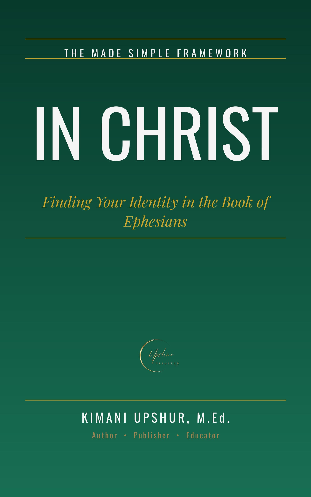

In Christ
by Kimani Upshur, M.Ed.
Before Paul tells you how to live, he tells you who you are. The book of Ephesians opens with one of the most breathtaking passages in all of Scripture: chosen before the foundation of the world, adopted into God's family, redeemed by Christ's blood, forgiven of every trespass, and sealed with the Holy Spirit. Three full chapters of identity before a single command — because in Paul's logic, you cannot live what you do not know. In In Christ, Kimani Upshur, M.Ed., walks you through all six chapters of Ephesians in plain, powerful language — from a prison cell to a battlefield. You will discover what it means to be raised and seated with Christ, how the dividing wall between divided peoples was demolished at the cross, what the "mystery" hidden for ages turned out to be, how to put on the new self in everyday life, what marriage reveals about the gospel, and how to stand firm in the armor of God when the evil day comes. Every chapter is grounded in Scripture — verified against the biblical text, honest about the hard passages (election, submission, slavery, and the authorship question are faced directly, not dodged), and clear about where interpretation begins. No invented stories. No avoided difficulties. Just Ephesians as Paul wrote it: identity before activity, grace before works, standing on what Christ has already done. Whether you are new to the faith or have walked with Christ for decades, this book will show you why two small words — in Christ — are the most important words for understanding who you are, and why they change everything about how you live.
- Publisher
- Upshur Unlimited, LLC
- Author
- Kimani Upshur, M.Ed.
- Format
- Ebook
- Language
- English